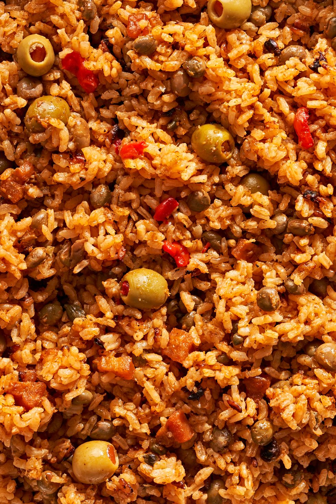

Con Gandules

PHOTO: ANDREW BUI; FOOD STYLING: MAKINZE GORE
Arroz con gandules is a traditional Puerto Rican dish that consists of rice, pork, tomato paste,
achiote, gandules (pigeon peas), and sofrito. Perfect served alongside pernil and yuca fries
(and followed up by a glass of coquito), arroz con gandules is perfect for holiday gatherings or
weeknight dinners.
Ingredients
SOFRITO
- 4 aji dulce or 2 cubanelle peppers, seeds removed, roughly chopped
- 1 small Spanish or yellow onion, roughly chopped
- 1 small green bell pepper, seeds and ribs removed, roughly chopped
- 1 small bunch fresh culantro or cilantro
- 6 cloves garlic, peeled
- 1 tbsp. dried oregano
ARROZ
- 2 tbsp. neutral oil
- 4 oz. salt pork or bacon, finely chopped
- 1/4 c. double-concentrated tomato paste
- 3 c. medium- or long-grain rice, rinsed
- 3 c. water
- 1 (15-oz.) can pigeon peas (gandules), drained and rinsed
- 1/2 c. alcaparrado mix or equal amount of Manzanilla olives, pimento peppers, and/or capers
- 2 tsp. adobo all-purpose seasoning
- 1 small packet sazón con achiote (1 1/8 tsp.)
STEPS
-
In a large caldero or Dutch oven over medium heat, heat oil. Add salt pork and cook, stirring occasionally,
until fat has rendered out and pork is crisp, 3 to 5 minutes.
-
Carefully stir in sofrito and tomato paste. Cook, stirring occasionally, until slightly reduced and mixture
is no longer vibrantly green, about 4 minutes.
-
Stir in rice, water, pigeon peas, alcaparrado mix, adobo seasoning, and sazón con achiote and bring to a boil
over medium-high heat. Continue to cook, stirring occasionally, until liquid reduces to the point that a few
rice granules are peeking through the liquid, 3 to 4 minutes. Give everything one more gentle stir, then reduce
heat to low and cover. Cook, without uncovering, until rice is tender and liquid is absorbed, about 30 minutes.
-
Remove from heat, place a towel underneath lid, and let rice steam 20 minutes before serving.